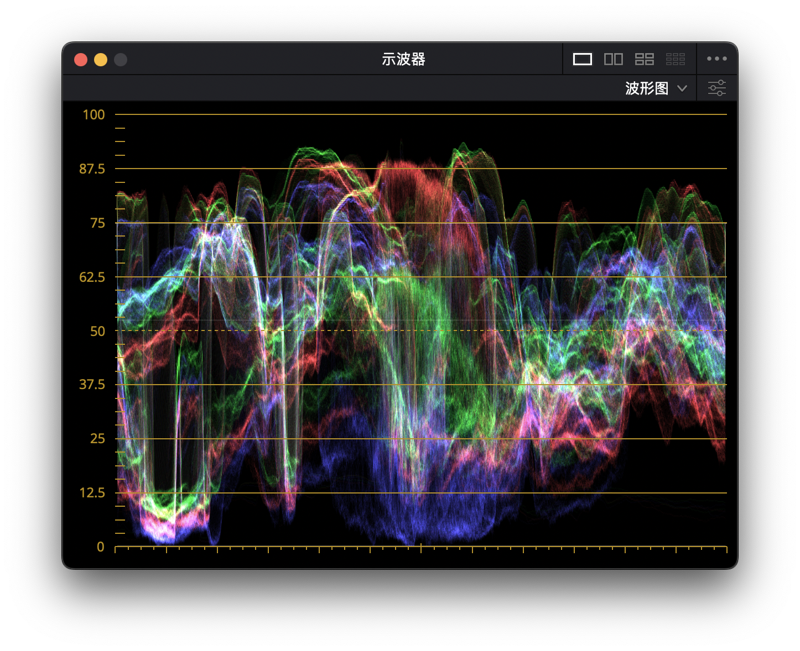
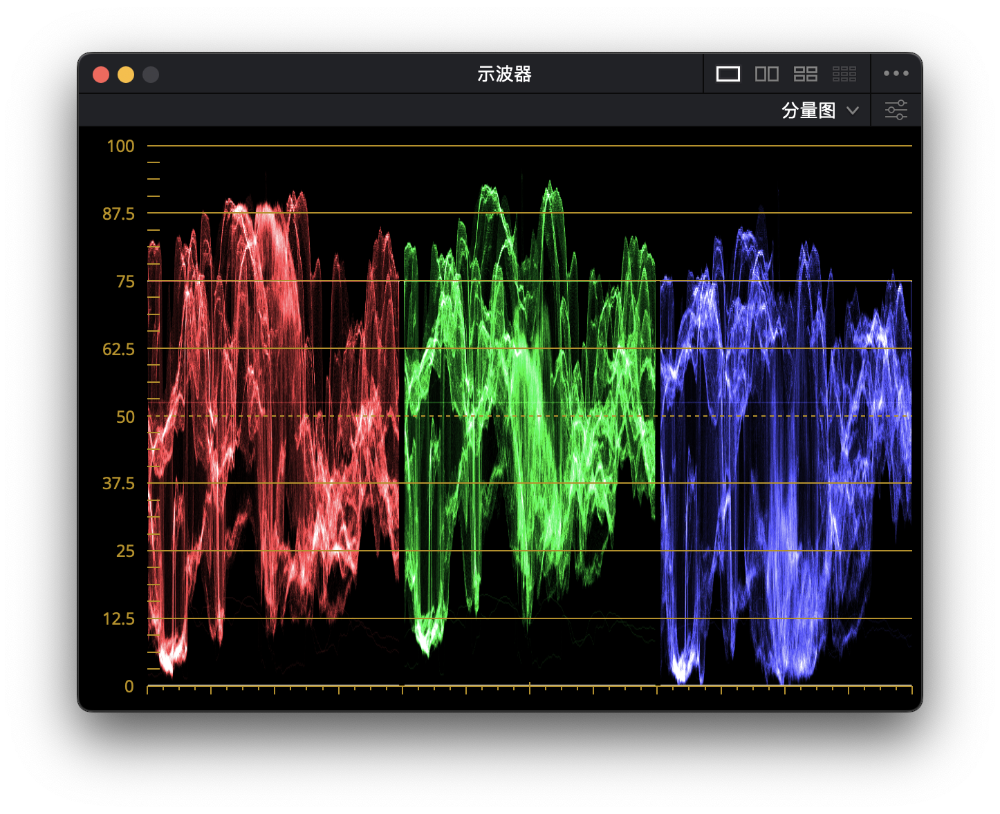
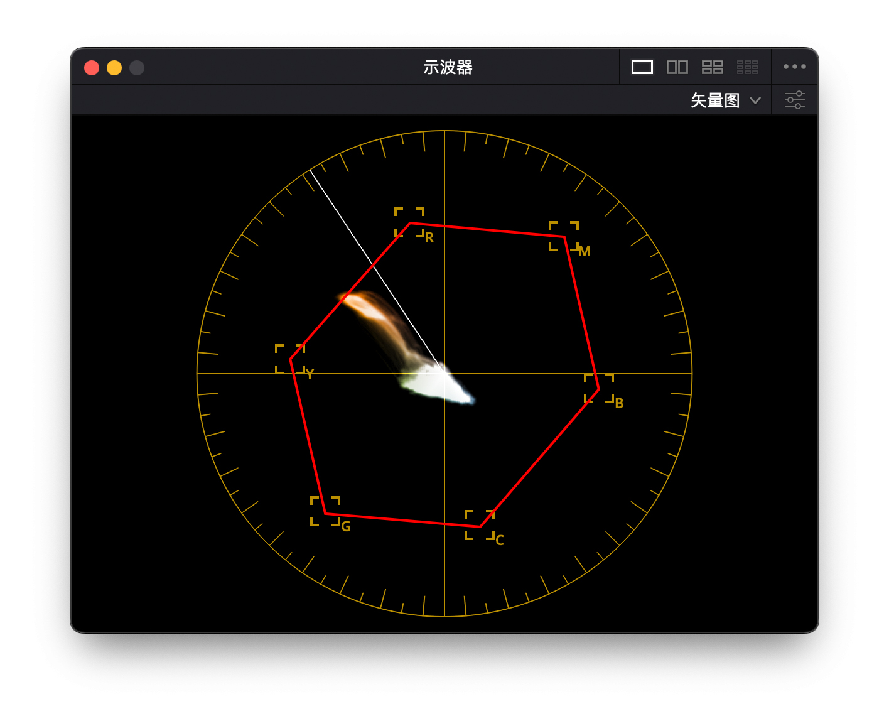

影像示波器（又叫影像分析器）
波形亮度示波器（WaveForm Scopes）

观察图像中明暗关系与程度，左边的单位是IRE，用无线电工程学会命名（Institute of Radio Engineers），广播级视频电平中规定了任何视频信号在播放时的亮度电平都不能超过100IRE。IRE把视频信号的有效部分——视频完全黑色（黑电平）到视频完全白色（白电平）之间平分成100份，定义为100个IRE单位，即0～100IRE。
RGB 波形亮度示波器（WaveForm RGB Scopes）

将红绿蓝的发光强度展示了出来，方便查看三原色通道的对齐情况，当 RGB 数值不同时，亮的颜色会显示在上方
RGB 分量示波器（RGB Parade Scope）

与 RGB 波形示波器类似，指不过将三原色分开显示，判断三原色的明度分布，一般用来做白平衡校正和色彩匹配。一般波形呈等量的关系，就说明色彩已被校正
YUV 矢量示波器（YUV vectorscope）

矢量示波器常用来判断画面的色相和饱和度，两者合称为色彩。矢量示波器不包含亮度信息，调色时一般需要配合亮度波形示波器使用。影像块从中间向外扩张，表示色彩的饱和度越高，图中红色框表示 75% 的色彩饱和度，如果影像块超过安全框，就可能被广播级影像设备剪切，从而无法正常显示。白色线叫做，肤色指示线，用来作为矫正肤色的参考，一般画面中都包含很多的色彩信息，如果想精准的查看某一局部影像的色彩信息，用遮罩框起来单独查看比较好